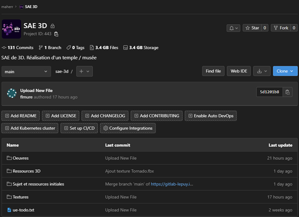

3D et JV - Création d'un musée en 3D
Ce projet est le projet de fin de première année de mon BUT Informatique Graphique. Cette partie graphique spécifique à l'IUT du Puy-en-Velay se ressent dans ce projet. En effet, l'ambition du projet ici est de créer un temple 3D (fourni, mais non texturé). Celui-ci devra présenter des œuvres contemporaines parmi une liste d'artistes déterminée. Pour visiter ce musée, il faut le faire sous un format jeu-vidéo.
Caractéristiques techniques du projet
Langages et technologies utilisées
Ce projet s'articule autour de plusieurs parties, nécessitant des outils différents. Premièrement, il y a toute la partie modélisation et création des œuvres. Pour cela, nous avons utilisé ces outils et logiciels :
- 3DsMax pour la modélisation
- Substance Painter pour la création (rapide) de textures
Aussi, il était nécessaire de créer le jeu en tant que tel. Pour cela, nous avons utilisé :
- Unreal Engine comme moteur de jeu
- C++ / BluePrint pour créer le fonctionement du jeu
Je précise ici que le choix d'Unreal Engine n'est pas anodin. En effet, nous n'avions jusqu'alors pas encore travaillé le moteur de jeu. Les seuls jeux réalisés étaient en 2D seulement, et qui plus est, sous Unity. Il y avait donc un double enjeu, ajouter une dimension, et découvrir un nouveau Game Engine.
Combien de temps, qui et quoi ?
Comme précisé au début, ce projet est celui de fin d'année. Il s'est déroulé sur 2 semaines de suite, à raison de 40 à 50 heures par personne.
Nous étions 5 sur ce projet, ce qui représente donc près de 200 heures de travail, comprenant donc la modélisation, la création de textures, la création du jeu, mais aussi des réunions d'équipe … Les 5 membres du projet sont : Eliot Bianchin, Lucas Chalmandrier, Léo Ricard--Lissard, Florian Mure, et moi-même.
Sur ce projet, pour la partie technique, je me suis chargé des textures des œuvres, une fois que les autres membres les avaient créées. De plus, je devais m'occuper des réunions d'équipe, de l'avancement, et de la bonne conduite du projet.
Détails du projet
L’objectif de notre temple est avant tout de rendre honneur aux artistes. En l’occurrence, nous avons été subjugués par le travail de Jean-Michel Othoniel, ainsi, nous avons préféré exploiter au maximum ces œuvres, et créer une certaine scénographie autour de celles-ci. Pour la majorité des œuvres, nous avons utilisé une plane, dans la scène 3DsMax, pour avoir une idée en permanence du résultat à produire.
Modélisation
Pour cette partie modélisation, je ne vais préciser que les œuvres que j'ai réalisés. Si vous êtes intéressés par le projet, au sein des sources (bas de page), il est possible d'accéder à l'hébergement de nos ressources. Dans le dossier "/Sujet et ressources initiales/" il y a le compte rendu.
"Le confident", de Jean-Michel Othoniel
- Utilisation de torus pour correspondre aux anneaux de l’œuvre
- Duplication de ces anneaux selon une première bande verticale
- Ajustements pour éviter de créer un motif n’étant pas présent dans l’œuvre
- Duplication horizontale pour correspondre à la taille de l’œuvre
- Dessin d’une ligne permettant de donner le tracé de la courbe de l’œuvre
- Plane avec 2 modifications (shell pour la profondeur, et un path deform pour le suivi du tracé)
- Ajout de deux planes correspondant aux soudures en haut et en bas de l’œuvre
- Render des anneaux + planes, pour l’utiliser en tant que Bitmap sur la plane (qui suit le tracé)
- Ajout des décorations sur le dessus de l’œuvre (suivant une ligne également)
- Ajout d’un banc (que l’on pourrait exploiter dans le développement, sur Unreal)

"Sans-titre" (rebaptisée "boules suspendues" par Eliot), de Jean-Michel Othoniel
Cette œuvre est purement décorative, et se place à l’entrée de la salle principale du temple. Elle est par ailleurs composée de deux éléments principaux, les « boules suspendues », ainsi que le fil qui tient le tout.
- Création d'un cylindre permettant la conduite des boules de l'œuvre
- Ajout des boules de l'œuvre (chacune étant différente, pas possible de copier/coller)

Texture
Pour texturer les œuvres, l’essentiel a été fait via les textures proposées par Substance Painter. Il y a une exception sur les textures de verre, non proposées par Substance. Nous avons donc utilisé des ressources externes en ligne, dédiées à Unreal Engine 4/5.
Pour plus de détail sur la méthode d'export et de texturing, c'est toujours dans le compte rendu. Dans le dossier "/Sujet et ressources initiales/" sur GitLab, il y a le compte rendu.
Gestion de projet
Planification des tâches
Pour travailler au mieux, et pour maintenir un avancement permettant de respecter la deadline finale, il était important de planifier les tâches et des réunions. Les tâches n’avaient pas une deadline précise, à l’heure près, l’objectif était plutôt d’avoir des réunions toutes les 2 ou 4 heures. Et on pouvait ainsi faire le point sur l’avancement de tous les membres.
Gestion de l'organisation
L’objectif était d’avoir les différentes tâches prévues dans différentes listes. C’est une bonne visualisation de l’avancement du projet, en ayant notamment une liste prévue pour la liste des tâches terminées. Par ailleurs, la possibilité d’attribuer des étiquettes accrue cette visualisation du projet dans son entièreté.
Discussion et aide
Pour pouvoir discuter et poser des problèmes, questionnements… quelque part, nous avons utilisé Discord. Cela permettait de recenser les points de blocage (sur Discord ou Trello d’ailleurs), les ressources du projet, comme le lien vers le Trello, GitLab… Et bien évidemment, les discussions se faisaient aussi dans cet espace dédié.
Partage de fichiers
Nous travaillons sur de nombreux fichiers, qui plus est, lourds. Ainsi, il est important d’avoir un bon système pour partager les fichiers entre nous. Cette obligation d’avoir chacun une « casquette » différente, entre Infographiste, gestion des textures, développeur… oblige d’avoir une bonne communication également. Donc, nous avons utilisé GitLab, avec une structure de dossiers, pour stocker nos fichiers de la meilleure des manières pour tout le monde.
Auto-critique du résultat
Sur le plan technique du jeu, celui-ci est bon, et est amplement suffisant pour l'ambition du projet. Il fallait simplement un personnage qui puisse se promener dans ce temple, c'est chose faite. Il est même possible de voir les œuvres à travers les murs, fonctionnalité supplémentaire que nous avons rajouté. Plein de choses étaient possibles, notamment des interactions avec les œuvres modélisées, que nous avons initié avec des cinématiques ou des petits papiers d'information. On aurait pu aller plus loin, mais le temps nous a contraints, et ce n'était pas tant l'objectif.
Pour la modélisation, celle-ci, bien que simpliste étant donné que nous sommes loin d'être des experts dans le domaine, était suffisante pour le projet. Sur la partie texture, faute de formation, nous sommes restés simples également. Nous n'avons pas créé de texture par nous-même, ce sont seulement celles proposées par Substance Painter.
Enfin, la gestion du projet a permis de rendre le projet et le présenter dans le temps imparti, tout en permettant à chacun de pouvoir démontrer ses compétences.